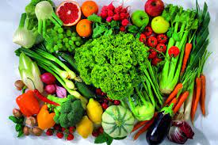
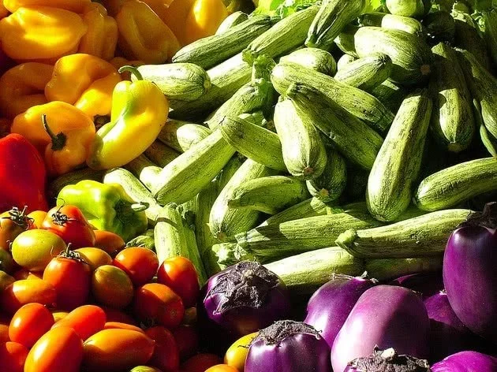
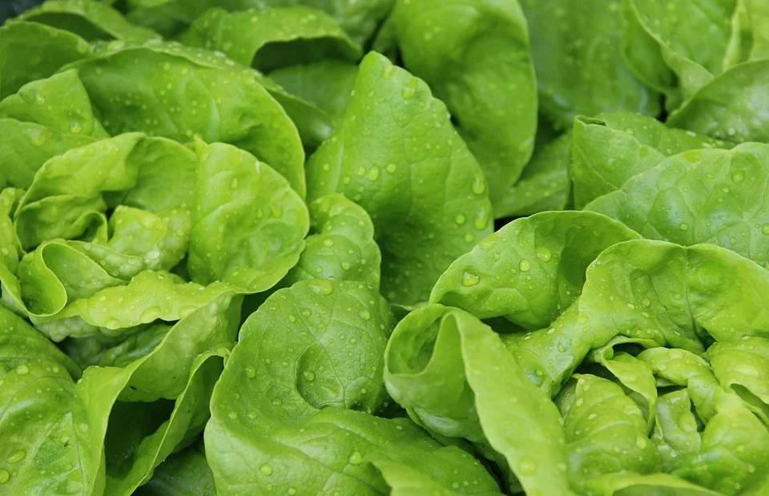

melhores liquidos hidratantes
contêm fluidos dos quais seu corpo pode se beneficiar. Bebidas com alto teor de açúcar podem não ser a melhor escolha nutricional, mas pesquisas mostram que líquidos adoçados com açúcar são tão bons quanto a água para fornecer fluidos ao seu sistema.
melhores liquidos hidratantes

